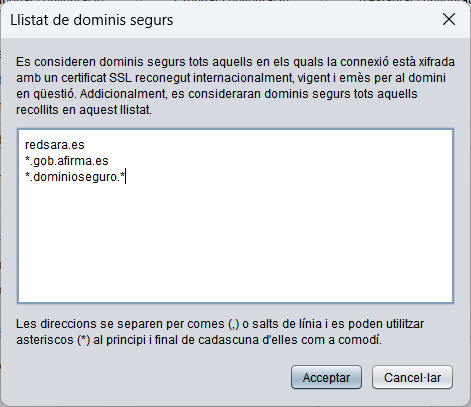

A vegades, Java no reconeix alguns dominis com a assegurances en connectar amb Autofirma a un servei extern a través d'un canal SSL. Aquesta funció permet configurar en Autofirma una llista de dominis que seran reconeguts com a segurs i evitar aquesta problemàtica.
Aquests dominis, es podran afegir en el quadre de text que es mostra en la següent imatge, separador per comes o salts de línia. Tambien es permet indicar amb un asterisc com a comodí en el principi o final del domini que s'indiqui.

La configuració establerta s'aplicarà en prémer sobre el botó OK. Si es prem el botó Cancel·lar, es tancarà la finestra sense aplicar la configuració.